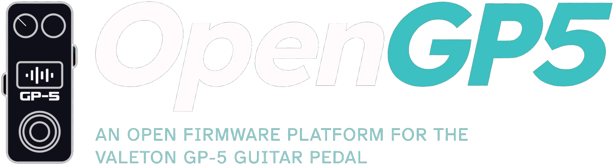

Web flasher
Put OpenGP5, or Valeton's own firmware, on your GP-5 over USB. Nothing to install.
Alpha — only flash if you are comfortable with the possibility of bricking your pedal.
This browser can't talk to USB-MIDI devices. Use Chrome, Edge or Opera on a desktop computer. Safari doesn't support it; in Firefox, allow the MIDI permission when asked.
1Connect the pedal
Plug the pedal in with USB, then connect. The browser will ask to allow MIDI access.
2Choose firmware
.bin, including Valeton's), or
| Part | Size | Contents | Write |
|---|
3Flash
Choose a firmware above.
If a flash goes wrong: unplug, hold the foot switch and the PARA knob, plug back in, and flash again. Some cases need more: see Safety.
OpenGP5 is not affiliated with or endorsed by Valeton. "Valeton" and "GP-5" are Valeton's trademarks, used only to say which pedal this works with.